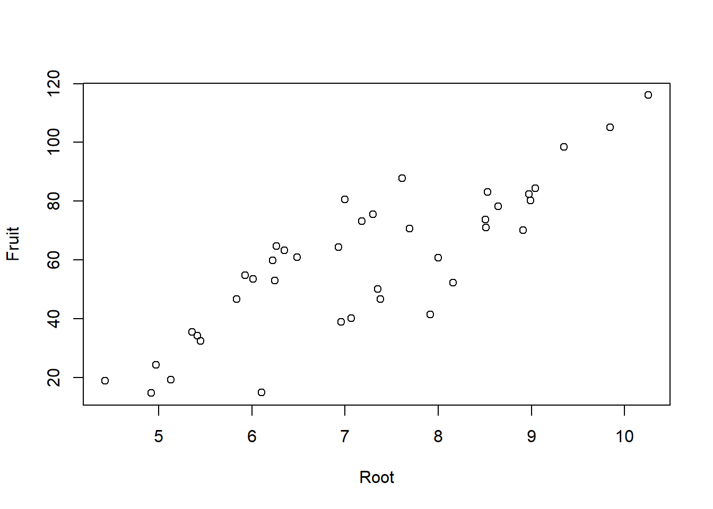
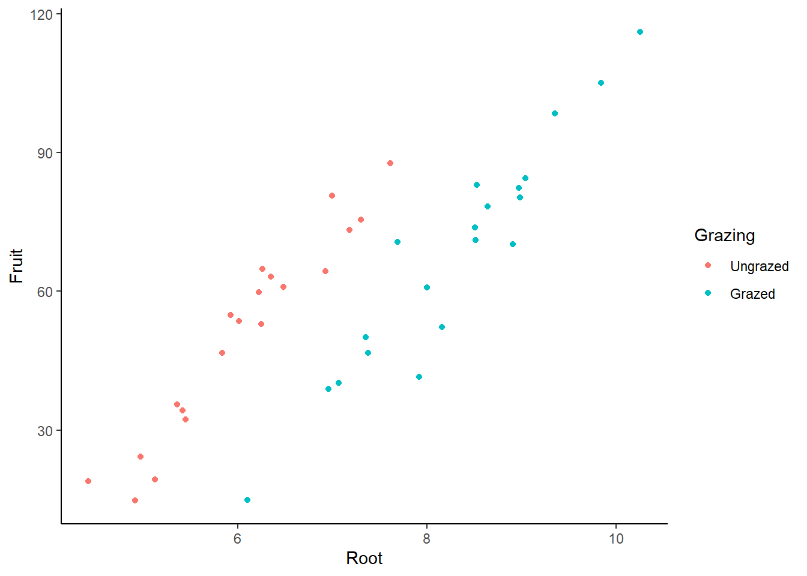
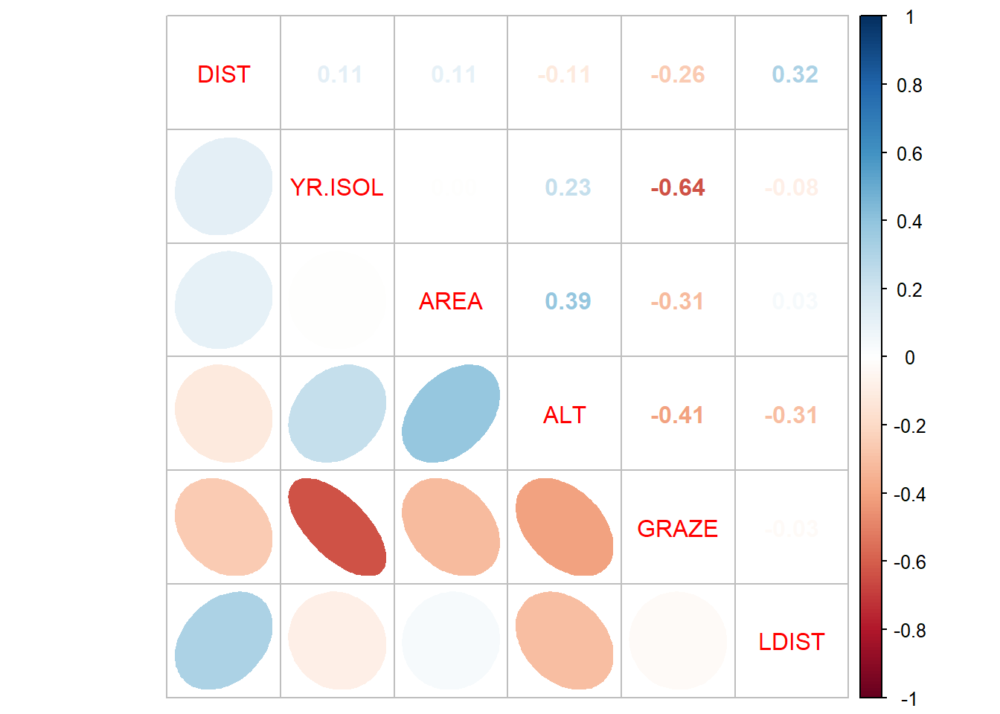

Download dieses Demoscript via “</>Code” (oben rechts)
Datensatz ipomopsis.csv
Datensatz loyn.csv
ANCOVA
Experiment zur Fruchtproduktion (“Fruit”) von Ipomopsis sp. (“Fruit”) in Abhängigkeit von der Beweidung (“Grazing” mit 2 Levels: “Grazed”, “Ungrazed”) und korrigiert für die Pflanzengrösse vor der Beweidung (hier ausgedrückt als Durchmesser an der Spitze des Wurzelstock: “Root”)
X Root Fruit Grazing
Min. : 1.00 Min. : 4.426 Min. : 14.73 Grazed :20
1st Qu.:10.75 1st Qu.: 6.083 1st Qu.: 41.15 Ungrazed:20
Median :20.50 Median : 7.123 Median : 60.88
Mean :20.50 Mean : 7.181 Mean : 59.41
3rd Qu.:30.25 3rd Qu.: 8.510 3rd Qu.: 76.19
Max. :40.00 Max. :10.253 Max. :116.05
# Pflanzengrösse ("Root") vs. Fruchtproduktion ("Fruit")plot(Fruit ~ Root, data = compensation)

-> Je grösser die Pflanze, desto grösser ihre Fruchtproduktion.
# Beweidung ("Grazing") vs. Fruchtroduktion ("Fruit)boxplot(Fruit ~ Grazing, data = compensation)
-> In der beweideten Gruppe scheint die Fruchtproduktion grösser. Liegt dies an der Beweidung oder an unterschiedlichen Pflanzengrössen zwischen den Gruppen?
# Plotten der vollständigen Daten/Informationlibrary("ggplot2")ggplot(compensation, aes(Root, Fruit, color = Grazing)) +geom_point() +theme_classic()

-> Die grössere Fruchtproduktion innerhalb der beweideten Gruppe scheint also ein Resultat von unterschiedlichen Pflanzengrössen zwischen den Gruppen zu sein und nicht an der Beweidung zu liegen.
# Lineare Modelle definieren und anschauenaoc.1<-lm(Fruit ~ Root * Grazing, data = compensation) # Volles Modell mit Interaktionsummary.aov(aoc.1)
-> Das ANCOVA-Modell widerspiegelt die Zusammenhänge wie sie aufgrund der grafisch dargestellten Daten zu vermuten sind gut. Die Residual-Plots zeigen 3 Ausreisser (Beobachtungen 27, 34 und 37), welche “aus der Reihe tanzen”.
Polynomische Regression
# Daten generieren und Modelle rechnenpred <-c(20, 19, 25, 10, 8, 15, 13, 18, 11, 14, 25, 39, 38, 28, 24) # "pred" sei unsere unabhängige Variableresp <-c(12, 15, 10, 7, 2, 10, 12, 11, 13, 10, 9, 2, 4, 7, 13) # "resp" sei unsere abhängige Variableplot(pred, resp) # So sehen die Daten aus
# Modelle definierenlm.1<-lm(resp ~ pred) # Einfaches lineares Modelllm.quad <-lm(resp ~ pred +I(pred^2)) # lineares Modell mit quadratischem Termsummary(lm.1) # Modell anschauen
Call:
lm(formula = resp ~ pred)
Residuals:
Min 1Q Median 3Q Max
-9.0549 -1.7015 0.5654 2.0617 5.6406
Coefficients:
Estimate Std. Error t value Pr(>|t|)
(Intercept) 12.2879 2.4472 5.021 0.000234 ***
pred -0.1541 0.1092 -1.412 0.181538
---
Signif. codes: 0 '***' 0.001 '**' 0.01 '*' 0.05 '.' 0.1 ' ' 1
Residual standard error: 3.863 on 13 degrees of freedom
Multiple R-squared: 0.1329, Adjusted R-squared: 0.06622
F-statistic: 1.993 on 1 and 13 DF, p-value: 0.1815
-> kein signifikanter Zusammenhang und entsprechend kleines Bestimmtheitsmass (adj. R2 = 0.07)
summary(lm.quad) # Modell anschauen
Call:
lm(formula = resp ~ pred + I(pred^2))
Residuals:
Min 1Q Median 3Q Max
-4.3866 -1.1018 -0.2027 1.3831 4.4211
Coefficients:
Estimate Std. Error t value Pr(>|t|)
(Intercept) -2.239308 3.811746 -0.587 0.56777
pred 1.330933 0.360105 3.696 0.00306 **
I(pred^2) -0.031587 0.007504 -4.209 0.00121 **
---
Signif. codes: 0 '***' 0.001 '**' 0.01 '*' 0.05 '.' 0.1 ' ' 1
Residual standard error: 2.555 on 12 degrees of freedom
Multiple R-squared: 0.6499, Adjusted R-squared: 0.5915
F-statistic: 11.14 on 2 and 12 DF, p-value: 0.001842
-> signifikanter Zusammenhang und viel besseres Bestimmtheitsmass (adj. R2 = 0.60)
# Modelle plottenpar(mfrow =c(1, 2))# 1. lineares Modellplot(resp ~ pred, main ="Lineares Modell")abline(lm.1, col ="blue")# 2. quadratisches Modellplot(resp ~ pred, main ="Quadratisches Modell")xv <-seq(0, 40, 0.1) # Input für Modellvoraussage via predict ()yv2 <-predict(lm.quad, list(pred = xv))lines(xv, yv2, col ="red")
# Residualplotspar(mfrow =c(2, 2))plot(lm.1, main ="Lineares Modell")
# Zunehmend komplizierte Modelle (je komplizierter desto overfitteter) definierenlm.0<-lm(y ~1, data = test)lm.1<-lm(y ~ x, data = test)lm.2<-lm(y ~ x +I(x^2), data = test)lm.3<-lm(y ~ x +I(x^2) +I(x^3), data = test)lm.4<-lm(y ~ x +I(x^2) +I(x^3) +I(x^4), data = test)lm.5<-lm(y ~ x +I(x^2) +I(x^3) +I(x^4) +I(x^5), data = test)# Summaries rechnensmy.0<-summary(lm.0)smy.1<-summary(lm.1)smy.2<-summary(lm.2)smy.3<-summary(lm.3)smy.4<-summary(lm.4)smy.5<-summary(lm.5)# R2 vergleichensmy.0$r.squared
[1] 0
smy.1$r.squared
[1] 0.01242685
smy.2$r.squared
[1] 0.1105981
smy.3$r.squared
[1] 0.1697982
smy.4$r.squared
[1] 0.874639
smy.5$r.squared
[1] 1
smy.5$adj.r.squared
[1] NaN
-> R2 wird immer grösser, d.h. die Modelle werden immer besser. ;-)
# Modelle plottenxv <-seq(from =0, to =10, by =0.1)plot(y ~ x, cex =2, col ="black", lwd =3, data = test)yv <-predict(lm.1, list(x = xv))lines(xv, yv, col ="red", lwd =3)text(x =c(1, 70), "lm.1", col ="red")yv <-predict(lm.2, list(x = xv))lines(xv, yv, col ="blue", lwd =3)text(x =c(1, 65), "lm.2", col ="blue")yv <-predict(lm.3, list(x = xv))lines(xv, yv, col ="green", lwd =3)text(x =c(1, 60), "lm.3", col ="green")yv <-predict(lm.4, list(x = xv))lines(xv, yv, col ="orange", lwd =3)text(x =c(1, 55), "lm.4", col ="orange")yv <-predict(lm.5, list(x = xv))lines(xv, yv, col ="violet", lwd =3)text(x =c(1, 50), "lm.5", col ="violet")
-> Auch der optische Fit wird immer besser. Wir bestreiben jedoch Overfitting und Overfittig ist nicht gut: Denn, macht es Sinn, 6 Datenpunkte mit einem Modell mit 6 Parametern zu fitten??
Multiple lineare Regression (basierend auf Logan, Beispiel 9A)
# Daten laden und anschauenloyn <-read.delim("datasets/statistik/loyn.csv", sep =",")summary(loyn)
X ABUND AREA YR.ISOL
Min. : 1.00 Min. : 1.50 Min. : 0.10 Min. :1890
1st Qu.:14.75 1st Qu.:12.40 1st Qu.: 2.00 1st Qu.:1928
Median :28.50 Median :21.05 Median : 7.50 Median :1962
Mean :28.50 Mean :19.51 Mean : 69.27 Mean :1950
3rd Qu.:42.25 3rd Qu.:28.30 3rd Qu.: 29.75 3rd Qu.:1966
Max. :56.00 Max. :39.60 Max. :1771.00 Max. :1976
DIST LDIST GRAZE ALT
Min. : 26.0 Min. : 26.0 Min. :1.000 Min. : 60.0
1st Qu.: 93.0 1st Qu.: 158.2 1st Qu.:2.000 1st Qu.:120.0
Median : 234.0 Median : 338.5 Median :3.000 Median :140.0
Mean : 240.4 Mean : 733.3 Mean :2.982 Mean :146.2
3rd Qu.: 333.2 3rd Qu.: 913.8 3rd Qu.:4.000 3rd Qu.:182.5
Max. :1427.0 Max. :4426.0 Max. :5.000 Max. :260.0
Korrelation zwischen den Prädiktoren
# Wir setzen die Schwelle bei |0.7|cor <-cor(loyn[, 3:8]) # Korrelationen rechnen details siehe: "?cor"# Korrelationen Visualisieren (google: "correlation plot r"...)library("corrplot")corrplot.mixed(cor, lower ="ellipse", upper ="number", order ="AOE")

-> Keine Korrelation ist >|0.7| . Aber es gilt zu beachten , dass GRAZE ziemlich stark |>0.6| mit YR.ISOL korreliert ist
# Volles Modell definierennames(loyn)
[1] "X" "ABUND" "AREA" "YR.ISOL" "DIST" "LDIST" "GRAZE"
[8] "ALT"
lm.1<-lm(ABUND ~ YR.ISOL + AREA + DIST + LDIST + GRAZE + ALT, data = loyn)library("car")par(mfrow =c(2, 2))plot(lm.1)
-> Plot sieht zwar ok aus, aber mit 6 Prädiktoren ist das Modell wohl “overfitted”
vif(lm.1)
YR.ISOL AREA DIST LDIST GRAZE ALT
1.841657 1.337627 1.227387 1.255028 2.307661 1.574537
Modellvereinfachung
Schrittweise die am wenigsten signifkanten Terme entfernen:
lm.1<-lm(ABUND ~ YR.ISOL + AREA + DIST + LDIST + GRAZE + ALT, data = loyn)summary(lm.1)
Call:
lm(formula = ABUND ~ YR.ISOL + AREA + DIST + LDIST + GRAZE +
ALT, data = loyn)
Residuals:
Min 1Q Median 3Q Max
-17.6638 -4.6409 -0.0883 4.2858 20.1042
Coefficients:
Estimate Std. Error t value Pr(>|t|)
(Intercept) -1.097e+02 1.133e+02 -0.968 0.33791
YR.ISOL 6.693e-02 5.684e-02 1.177 0.24472
AREA 8.866e-04 4.657e-03 0.190 0.84980
DIST 3.811e-03 5.418e-03 0.703 0.48514
LDIST 1.418e-03 1.310e-03 1.082 0.28451
GRAZE -3.447e+00 1.107e+00 -3.114 0.00308 **
ALT 4.772e-02 3.089e-02 1.545 0.12878
---
Signif. codes: 0 '***' 0.001 '**' 0.01 '*' 0.05 '.' 0.1 ' ' 1
Residual standard error: 7.947 on 49 degrees of freedom
Multiple R-squared: 0.5118, Adjusted R-squared: 0.452
F-statistic: 8.561 on 6 and 49 DF, p-value: 2.24e-06
lm.2<-update(lm.1, ~ . - AREA) # Prädiktor mit grösstem p-Wert entfernenanova(lm.1, lm.2) # Modelle vergleichen (falls signifikant, so müssten man den Prädiktor wieder ins Modell nehmen)
Analysis of Variance Table
Model 1: ABUND ~ YR.ISOL + AREA + DIST + LDIST + GRAZE + ALT
Model 2: ABUND ~ YR.ISOL + DIST + LDIST + GRAZE + ALT
Res.Df RSS Df Sum of Sq F Pr(>F)
1 49 3094.2
2 50 3096.5 -1 -2.2886 0.0362 0.8498
summary(lm.2) # Neues einfacheres Modell anschauen und Prädiktor mit grösstem p-Wert ausfindig machen
Call:
lm(formula = ABUND ~ YR.ISOL + DIST + LDIST + GRAZE + ALT, data = loyn)
Residuals:
Min 1Q Median 3Q Max
-17.7240 -4.7245 0.0206 4.2698 20.0630
Coefficients:
Estimate Std. Error t value Pr(>|t|)
(Intercept) -1.044e+02 1.089e+02 -0.959 0.34202
YR.ISOL 6.418e-02 5.445e-02 1.179 0.24409
DIST 3.884e-03 5.352e-03 0.726 0.47145
LDIST 1.440e-03 1.292e-03 1.115 0.27036
GRAZE -3.500e+00 1.060e+00 -3.303 0.00177 **
ALT 4.964e-02 2.891e-02 1.717 0.09212 .
---
Signif. codes: 0 '***' 0.001 '**' 0.01 '*' 0.05 '.' 0.1 ' ' 1
Residual standard error: 7.87 on 50 degrees of freedom
Multiple R-squared: 0.5114, Adjusted R-squared: 0.4626
F-statistic: 10.47 on 5 and 50 DF, p-value: 6.532e-07
# Oben beschriebene Schritte wiederholen bis nur noch signifikante Prädiktoren im Modelllm.3<-update(lm.2, ~ . - DIST)anova(lm.2, lm.3)
Analysis of Variance Table
Model 1: ABUND ~ YR.ISOL + DIST + LDIST + GRAZE + ALT
Model 2: ABUND ~ YR.ISOL + LDIST + GRAZE + ALT
Res.Df RSS Df Sum of Sq F Pr(>F)
1 50 3096.5
2 51 3129.1 -1 -32.609 0.5265 0.4714
summary(lm.3)
Call:
lm(formula = ABUND ~ YR.ISOL + LDIST + GRAZE + ALT, data = loyn)
Residuals:
Min 1Q Median 3Q Max
-18.4659 -4.8236 0.1506 4.9245 19.8891
Coefficients:
Estimate Std. Error t value Pr(>|t|)
(Intercept) -99.587487 108.158382 -0.921 0.361513
YR.ISOL 0.062627 0.054157 1.156 0.252910
LDIST 0.001677 0.001245 1.347 0.184026
GRAZE -3.699613 1.018706 -3.632 0.000653 ***
ALT 0.046485 0.028446 1.634 0.108386
---
Signif. codes: 0 '***' 0.001 '**' 0.01 '*' 0.05 '.' 0.1 ' ' 1
Residual standard error: 7.833 on 51 degrees of freedom
Multiple R-squared: 0.5063, Adjusted R-squared: 0.4676
F-statistic: 13.07 on 4 and 51 DF, p-value: 2.123e-07
Analysis of Variance Table
Model 1: ABUND ~ YR.ISOL + LDIST + GRAZE + ALT
Model 2: ABUND ~ LDIST + GRAZE + ALT
Res.Df RSS Df Sum of Sq F Pr(>F)
1 51 3129.1
2 52 3211.2 -1 -82.047 1.3372 0.2529
summary(lm.4)
Call:
lm(formula = ABUND ~ LDIST + GRAZE + ALT, data = loyn)
Residuals:
Min 1Q Median 3Q Max
-18.155 -4.148 -0.503 4.649 18.588
Coefficients:
Estimate Std. Error t value Pr(>|t|)
(Intercept) 25.289313 6.080034 4.159 0.00012 ***
LDIST 0.001455 0.001234 1.179 0.24362
GRAZE -4.430947 0.801206 -5.530 1.05e-06 ***
ALT 0.043565 0.028425 1.533 0.13144
---
Signif. codes: 0 '***' 0.001 '**' 0.01 '*' 0.05 '.' 0.1 ' ' 1
Residual standard error: 7.858 on 52 degrees of freedom
Multiple R-squared: 0.4933, Adjusted R-squared: 0.4641
F-statistic: 16.88 on 3 and 52 DF, p-value: 8.777e-08
lm.5<-update(lm.4, ~ . - LDIST)anova(lm.4, lm.5)
Analysis of Variance Table
Model 1: ABUND ~ LDIST + GRAZE + ALT
Model 2: ABUND ~ GRAZE + ALT
Res.Df RSS Df Sum of Sq F Pr(>F)
1 52 3211.2
2 53 3297.1 -1 -85.892 1.3909 0.2436
summary(lm.5)
Call:
lm(formula = ABUND ~ GRAZE + ALT, data = loyn)
Residuals:
Min 1Q Median 3Q Max
-19.1677 -4.8261 0.0266 4.6944 19.1054
Coefficients:
Estimate Std. Error t value Pr(>|t|)
(Intercept) 28.55582 5.43245 5.257 2.67e-06 ***
GRAZE -4.59679 0.79167 -5.806 3.67e-07 ***
ALT 0.03191 0.02675 1.193 0.238
---
Signif. codes: 0 '***' 0.001 '**' 0.01 '*' 0.05 '.' 0.1 ' ' 1
Residual standard error: 7.887 on 53 degrees of freedom
Multiple R-squared: 0.4798, Adjusted R-squared: 0.4602
F-statistic: 24.44 on 2 and 53 DF, p-value: 3.011e-08
lm.6<-update(lm.5, ~ . - ALT)anova(lm.5, lm.6)
Analysis of Variance Table
Model 1: ABUND ~ GRAZE + ALT
Model 2: ABUND ~ GRAZE
Res.Df RSS Df Sum of Sq F Pr(>F)
1 53 3297.1
2 54 3385.6 -1 -88.519 1.4229 0.2382
summary(lm.6)
Call:
lm(formula = ABUND ~ GRAZE, data = loyn)
Residuals:
Min 1Q Median 3Q Max
-19.1066 -5.4097 0.0934 4.4856 18.2747
Coefficients:
Estimate Std. Error t value Pr(>|t|)
(Intercept) 34.3692 2.4095 14.264 < 2e-16 ***
GRAZE -4.9813 0.7259 -6.862 6.9e-09 ***
---
Signif. codes: 0 '***' 0.001 '**' 0.01 '*' 0.05 '.' 0.1 ' ' 1
Residual standard error: 7.918 on 54 degrees of freedom
Multiple R-squared: 0.4658, Adjusted R-squared: 0.4559
F-statistic: 47.09 on 1 and 54 DF, p-value: 6.897e-09
par(mfrow =c(2, 2))plot(lm.6)
-> das minimal adäquate Modell enthält nur noch einen Prädiktor (GRAZE) und dessen Residualplots sehen ok aus.
Hierarchical partitioning
Wir können auch schauen wie bedeutsam die einzelnen Variablen sind:
library("hier.part")
Error in library("hier.part"): there is no package called 'hier.part'
---date: 2023-11-06lesson: Stat3thema: Lineare Modelle IIindex: 1format: html: code-tools: source: trueknitr: opts_chunk: collapse: false---# Stat3: Demo- Download dieses Demoscript via "\</\>Code" (oben rechts)- Datensatz *ipomopsis.csv*- Datensatz *loyn.csv*## ANCOVAExperiment zur Fruchtproduktion ("Fruit") von Ipomopsis sp. ("Fruit") in Abhängigkeit von der Beweidung ("Grazing" mit 2 Levels: "Grazed", "Ungrazed") und korrigiert für die Pflanzengrösse vor der Beweidung (hier ausgedrückt als Durchmesser an der Spitze des Wurzelstock: "Root")```{r}# Daten einlesen und anschauencompensation <-read.delim("datasets/statistik/ipomopsis.csv", sep =",", stringsAsFactors = T)head(compensation)summary(compensation)# Pflanzengrösse ("Root") vs. Fruchtproduktion ("Fruit")plot(Fruit ~ Root, data = compensation)```-> Je grösser die Pflanze, desto grösser ihre Fruchtproduktion.```{r}# Beweidung ("Grazing") vs. Fruchtroduktion ("Fruit)boxplot(Fruit ~ Grazing, data = compensation)```-> In der beweideten Gruppe scheint die Fruchtproduktion grösser. Liegt dies an der Beweidung oder an unterschiedlichen Pflanzengrössen zwischen den Gruppen?```{r}# Plotten der vollständigen Daten/Informationlibrary("ggplot2")ggplot(compensation, aes(Root, Fruit, color = Grazing)) +geom_point() +theme_classic()```-> Die grössere Fruchtproduktion innerhalb der beweideten Gruppe scheint also ein Resultat von unterschiedlichen Pflanzengrössen zwischen den Gruppen zu sein und nicht an der Beweidung zu liegen.```{r}# Lineare Modelle definieren und anschauenaoc.1<-lm(Fruit ~ Root * Grazing, data = compensation) # Volles Modell mit Interaktionsummary.aov(aoc.1)aoc.2<-lm(Fruit ~ Grazing + Root, data = compensation) # Finales Modell ohne die (nicht signifikante Interaktion)summary.aov(aoc.2) # ANOVA-Tabellesummary(aoc.2) # Parameter-Tabelle# Residualplots anschauenpar(mfrow =c(2, 2))plot(aoc.2)```-> Das ANCOVA-Modell widerspiegelt die Zusammenhänge wie sie aufgrund der grafisch dargestellten Daten zu vermuten sind gut. Die Residual-Plots zeigen 3 Ausreisser (Beobachtungen 27, 34 und 37), welche "aus der Reihe tanzen".## Polynomische Regression```{r}# Daten generieren und Modelle rechnenpred <-c(20, 19, 25, 10, 8, 15, 13, 18, 11, 14, 25, 39, 38, 28, 24) # "pred" sei unsere unabhängige Variableresp <-c(12, 15, 10, 7, 2, 10, 12, 11, 13, 10, 9, 2, 4, 7, 13) # "resp" sei unsere abhängige Variableplot(pred, resp) # So sehen die Daten aus# Modelle definierenlm.1<-lm(resp ~ pred) # Einfaches lineares Modelllm.quad <-lm(resp ~ pred +I(pred^2)) # lineares Modell mit quadratischem Termsummary(lm.1) # Modell anschauen```-> kein signifikanter Zusammenhang und entsprechend kleines Bestimmtheitsmass (adj. R^2^ = 0.07)```{r}summary(lm.quad) # Modell anschauen```-> signifikanter Zusammenhang und viel besseres Bestimmtheitsmass (adj. R^2^ = 0.60)```{r}# Modelle plottenpar(mfrow =c(1, 2))# 1. lineares Modellplot(resp ~ pred, main ="Lineares Modell")abline(lm.1, col ="blue")# 2. quadratisches Modellplot(resp ~ pred, main ="Quadratisches Modell")xv <-seq(0, 40, 0.1) # Input für Modellvoraussage via predict ()yv2 <-predict(lm.quad, list(pred = xv))lines(xv, yv2, col ="red")``````{r}# Residualplotspar(mfrow =c(2, 2))plot(lm.1, main ="Lineares Modell")plot(lm.quad, main ="Quadratisches Modell")```### Simulation Overfitting```{r}# Beispieldaten mit 6 Datenpunktentest <-data.frame("x"=c(1, 2, 3, 4, 5, 6), "y"=c(34, 21, 70, 47, 23, 45))par(mfrow =c(1, 1))plot(y ~ x, data = test)``````{r}# Zunehmend komplizierte Modelle (je komplizierter desto overfitteter) definierenlm.0<-lm(y ~1, data = test)lm.1<-lm(y ~ x, data = test)lm.2<-lm(y ~ x +I(x^2), data = test)lm.3<-lm(y ~ x +I(x^2) +I(x^3), data = test)lm.4<-lm(y ~ x +I(x^2) +I(x^3) +I(x^4), data = test)lm.5<-lm(y ~ x +I(x^2) +I(x^3) +I(x^4) +I(x^5), data = test)# Summaries rechnensmy.0<-summary(lm.0)smy.1<-summary(lm.1)smy.2<-summary(lm.2)smy.3<-summary(lm.3)smy.4<-summary(lm.4)smy.5<-summary(lm.5)# R2 vergleichensmy.0$r.squaredsmy.1$r.squaredsmy.2$r.squaredsmy.3$r.squaredsmy.4$r.squaredsmy.5$r.squaredsmy.5$adj.r.squared```-> R2 wird immer grösser, d.h. die Modelle werden immer besser. ;-)```{r}# Modelle plottenxv <-seq(from =0, to =10, by =0.1)plot(y ~ x, cex =2, col ="black", lwd =3, data = test)yv <-predict(lm.1, list(x = xv))lines(xv, yv, col ="red", lwd =3)text(x =c(1, 70), "lm.1", col ="red")yv <-predict(lm.2, list(x = xv))lines(xv, yv, col ="blue", lwd =3)text(x =c(1, 65), "lm.2", col ="blue")yv <-predict(lm.3, list(x = xv))lines(xv, yv, col ="green", lwd =3)text(x =c(1, 60), "lm.3", col ="green")yv <-predict(lm.4, list(x = xv))lines(xv, yv, col ="orange", lwd =3)text(x =c(1, 55), "lm.4", col ="orange")yv <-predict(lm.5, list(x = xv))lines(xv, yv, col ="violet", lwd =3)text(x =c(1, 50), "lm.5", col ="violet")```-> Auch der optische Fit wird immer besser. Wir bestreiben jedoch Overfitting und Overfittig ist nicht gut: Denn, macht es Sinn, 6 Datenpunkte mit einem Modell mit 6 Parametern zu fitten??## Multiple lineare Regression (basierend auf Logan, Beispiel 9A)```{r}# Daten laden und anschauenloyn <-read.delim("datasets/statistik/loyn.csv", sep =",")summary(loyn)```### Korrelation zwischen den Prädiktoren```{r}# Wir setzen die Schwelle bei |0.7|cor <-cor(loyn[, 3:8]) # Korrelationen rechnen details siehe: "?cor"# Korrelationen Visualisieren (google: "correlation plot r"...)library("corrplot")corrplot.mixed(cor, lower ="ellipse", upper ="number", order ="AOE")```-> Keine Korrelation ist \>\|0.7\| . Aber es gilt zu beachten , dass GRAZE ziemlich stark \|\>0.6\| mit YR.ISOL korreliert ist```{r}# Volles Modell definierennames(loyn)lm.1<-lm(ABUND ~ YR.ISOL + AREA + DIST + LDIST + GRAZE + ALT, data = loyn)library("car")par(mfrow =c(2, 2))plot(lm.1)```-> Plot sieht zwar ok aus, aber mit 6 Prädiktoren ist das Modell wohl "overfitted"```{r}vif(lm.1)```### ModellvereinfachungSchrittweise die am wenigsten signifkanten Terme entfernen:```{r}lm.1<-lm(ABUND ~ YR.ISOL + AREA + DIST + LDIST + GRAZE + ALT, data = loyn)summary(lm.1)lm.2<-update(lm.1, ~ . - AREA) # Prädiktor mit grösstem p-Wert entfernenanova(lm.1, lm.2) # Modelle vergleichen (falls signifikant, so müssten man den Prädiktor wieder ins Modell nehmen)summary(lm.2) # Neues einfacheres Modell anschauen und Prädiktor mit grösstem p-Wert ausfindig machen# Oben beschriebene Schritte wiederholen bis nur noch signifikante Prädiktoren im Modelllm.3<-update(lm.2, ~ . - DIST)anova(lm.2, lm.3)summary(lm.3)lm.4<-update(lm.3, ~ . - YR.ISOL)anova(lm.3, lm.4)summary(lm.4)lm.5<-update(lm.4, ~ . - LDIST)anova(lm.4, lm.5)summary(lm.5)lm.6<-update(lm.5, ~ . - ALT)anova(lm.5, lm.6)summary(lm.6)par(mfrow =c(2, 2))plot(lm.6)```-> das minimal adäquate Modell enthält nur noch einen Prädiktor (GRAZE) und dessen Residualplots sehen ok aus.### Hierarchical partitioningWir können auch schauen wie bedeutsam die einzelnen Variablen sind:```{r}library("hier.part")loyn.preds <-with(loyn, data.frame(YR.ISOL, AREA, DIST, LDIST, GRAZE, ALT))par(mfrow =c(1, 1))hier.part(loyn$ABUND, loyn.preds, gof ="Rsqu")```-> auch hier sticht GRAZE heraus. (und an zweiter Stelle YR.ISOL, der mit GRAZE am stärksten korreliert ist)### Partial regressions```{r}avPlots(lm.1, ask = F)```## Multimodel inference```{r}library("MuMIn")global.model <-lm(ABUND ~ YR.ISOL + AREA + DIST + LDIST + GRAZE + ALT, data = loyn)options(na.action ="na.fail")allmodels <-dredge(global.model)allmodels# Variable importancesw(allmodels)```-> Auch mit dieser Sichtweise ist GRAZE der wichtigste Prädiktor```{r}avgmodel <-model.avg(allmodels, subset =TRUE)summary(avgmodel)```